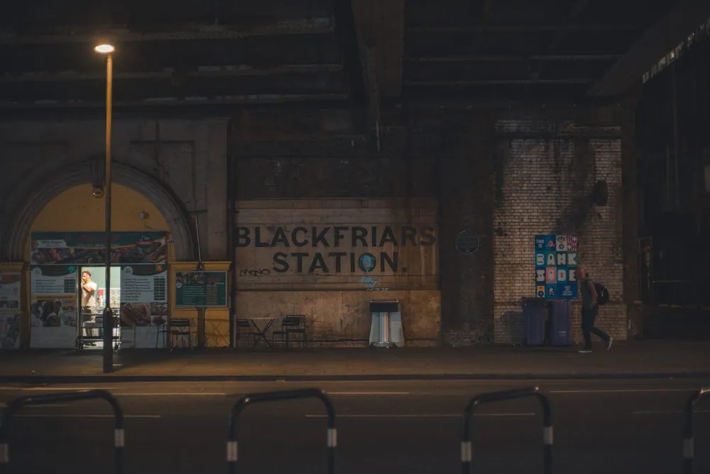
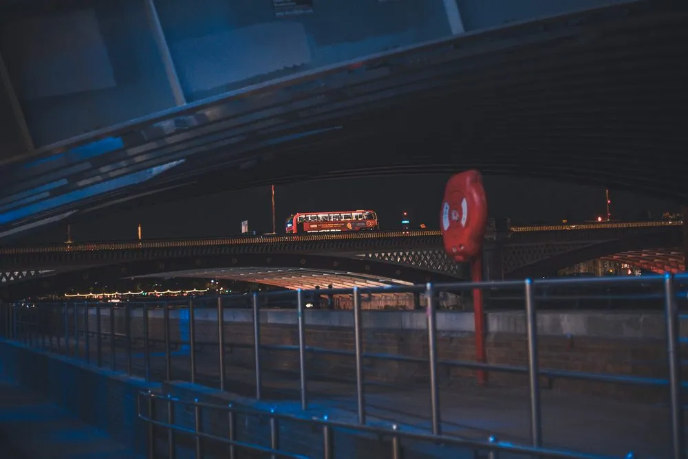
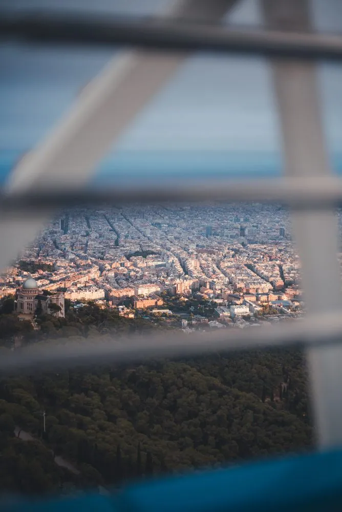
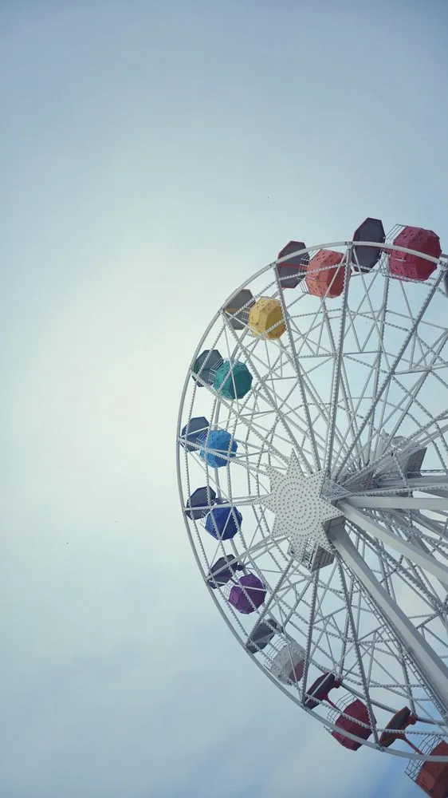
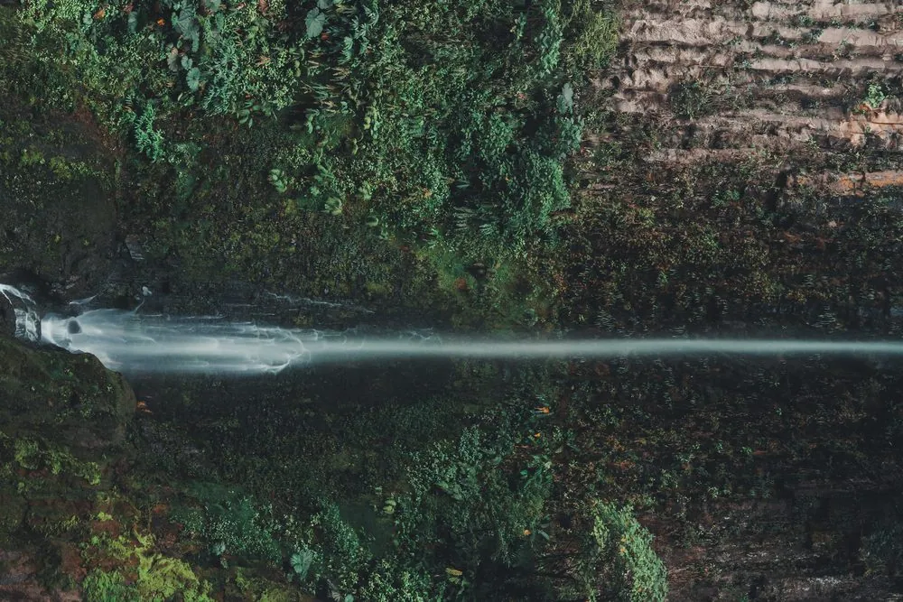
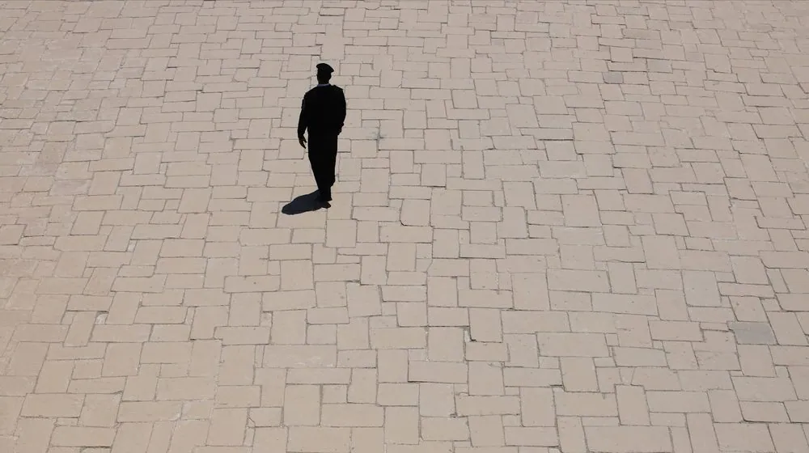
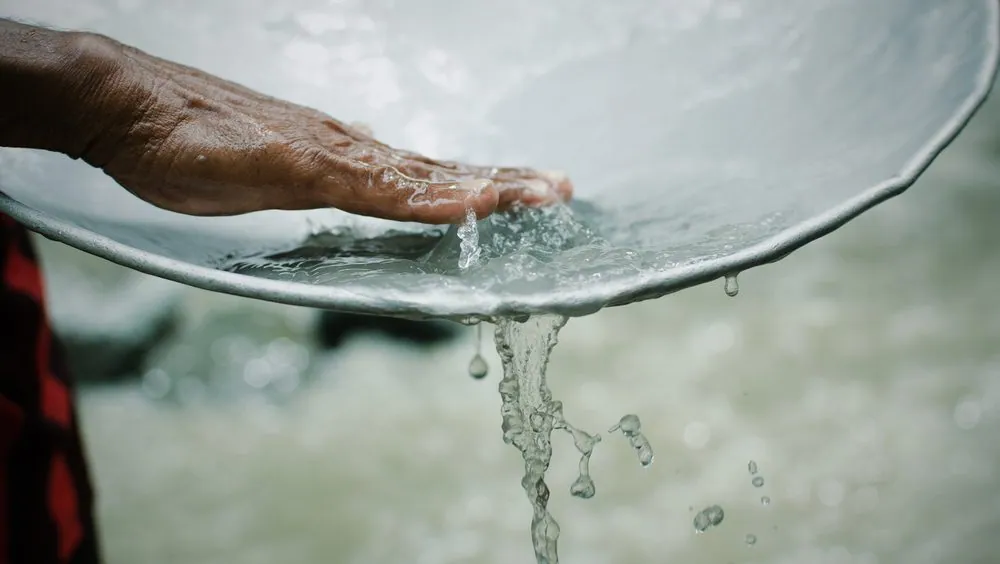

The eye when no one is hiring: cities, roads and water.
11 photos · Jose Pablo García / PERSONA







Photo · Chapter VI
The eye when no one is hiring: cities, roads and water.
11 photos · Jose Pablo García / PERSONA






